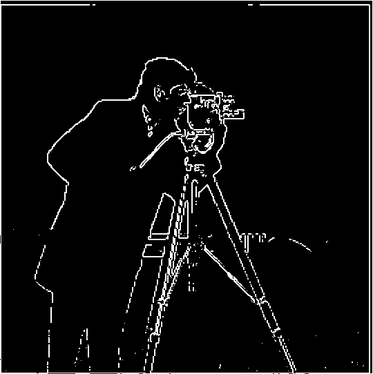
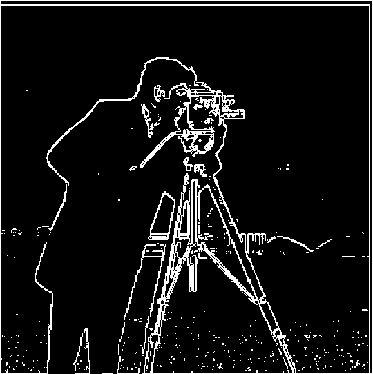
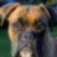

Kevin Chu · Fall 2026
Fun with Filters and Frequencies
This project ended up feeling like one long chain of ideas. I started by writing convolution from scratch, and somehow that same operation kept coming back for edges, sharpening, hybrid images, and finally blending.
Convolutions from scratch
The four-loop version is basically the definition of convolution written out literally. For every output pixel, I walk over every filter value, multiply it by the image pixel underneath, and add everything together. The one easy-to-miss detail is flipping the filter horizontally and vertically first. I forgot why that mattered at first, but without the flip I would be implementing cross-correlation instead.
I then rewrote it with two loops. The outer loops still move across the image, but NumPy multiplies and sums the entire patch at once. Padding was the part that took me the most time to reason through because pixels near the edge do not have a complete neighborhood. I used zeros outside the image: same returns the original size, while full keeps every partial overlap and produces a larger result.
The timing difference was bigger than I expected. On a 50 × 50 crop with a 9 × 9 box filter, one run took 0.0678 seconds with four loops, 0.0065 seconds with two loops, and 0.0004 seconds with scipy.signal.convolve2d. Both of my versions matched SciPy with np.allclose. Vectorizing the two inner loops helps a lot, although SciPy still wins easily because its inner work is compiled.
Four-loop version
for i in range(output_h):
for j in range(output_w):
for fi in range(fh):
for fj in range(fw):
output[i, j] += (
padded[i + fi, j + fj]
* flipped_filter[fi, fj]
)Two-loop version
for i in range(output_h):
for j in range(output_w):
patch = padded[i:i+fh, j:j+fw]
output[i, j] = np.sum(
patch * flipped_filter
)I tested the implementation on my own grayscale image. The normalized 9 × 9 box filter replaces each pixel with a local average, so the result becomes blurred. The finite-difference filters instead respond to sudden brightness changes: Dx emphasizes vertical edges and Dy emphasizes horizontal edges.
box_filter = np.ones((9, 9)) / 81
Dx = np.array([[1, 0, -1]])
Dy = np.array([[1], [0], [-1]])


Finite difference operator
I convolved the cameraman with Dx and Dy to measure how quickly brightness changes in each direction. Neither derivative alone contains every edge, so I combined them into the gradient magnitude √(Dx² + Dy²). Large values mean the image changes sharply at that pixel.
I first picked 0.23 because it removed a lot of grass, but it also erased parts of the tripod and the distant buildings. I compared 0.10, 0.15, and 0.23 again and chose 0.15. The grass is noisier than at 0.23, but I would rather keep the actual subject edges. Values above 0.15 become 1 and the rest become 0.






Derivative of Gaussian
I originally thought blurring before edge detection might just erase useful edges. Instead, it mostly removes the tiny brightness changes that were creating noise. I smoothed the cameraman with a 9 × 9 Gaussian with σ = 2, then repeated the Dx and Dy calculation.
The tradeoff is easy to see: the new edges are thicker because each transition has been spread across more pixels, but they are also much cleaner. The grass and small texture fade away while the main outline of the cameraman stays visible. This was where the purpose of the Gaussian filter really clicked for me.
Doing “blur, then differentiate” sounds like two separate convolutions, but convolution is associative. I convolved the Gaussian with Dx and Dy first to make two derivative-of-Gaussian filters, then applied each combined filter once. The maximum difference between the two pipelines was 1.16 × 10−15, and their thresholded edge maps had zero differing pixels, so they are the same apart from floating-point rounding.


Image sharpening
The name “unsharp mask” confused me at first because the result is supposed to be sharper. The idea is to use an unsharp, blurred copy only to find what detail is missing from it. A Gaussian blur keeps the low frequencies, so subtracting it from the original leaves mostly edges and fine texture. I then add a scaled version of that detail back: sharp = image + α(image − blur).
I combined those steps into the single unsharp-mask filter (1 + α)I − αG. Increasing α makes the Taj's windows and outlines more distinct, but α = 3 also creates obvious halos and harsh contrast. α = 1.5 gave the best balance here. Blurring and then sharpening again restores some edge contrast, but it cannot recover fine information that was already averaged away.


Second example: a tree tunnel
I went back to the full-resolution tree photo instead of the small preview. The branches and leaves give sharpening a lot to work with. They become easier to pick out at α = 1.5, but the result also looks more contrasty. The filter emphasizes existing edges. It does not invent new leaves.


Hybrid images
Hybrid images were the most fun part of the project, but also much more finicky than I expected. Up close, sharp edges and small details grab my attention. When I shrink the image or step away, those details disappear and I mostly see the broad low-frequency structure.
The code itself is short: high-pass one image, low-pass the other, and add them. Getting a convincing result is the hard part. I tried pairs with matching shapes and checked each result at a much smaller size. If the silhouettes fight each other, changing the cutoff cannot really fix it.
The assignment specifically asks for Derek and Nutmeg, so I kept that pair. I aligned their eyes and used σ = 2 for Derek's high-pass filter and σ = 5 for Nutmeg's low-pass filter. Derek's facial edges dominate nearby. Nutmeg becomes easier to recognize after shrinking the image or stepping back.


Owl × Moon
I wanted the owl's face to become the Moon's round disc. I cropped both around that circle, then used σ = 2 for the owl's high-pass and σ = 10 for the Moon's low-pass. I reduced the owl's contribution to 0.6 because the original weight of 1 left too many feathers in the small view. The eyes still linger a little, but the Moon reads more clearly now.


Frequency analysis of Owl × Moon


The Moon's low-pass spectrum is concentrated near the bright center, where low frequencies live. The owl's high-pass spectrum loses much of that center and keeps energy farther outward. The final spectrum contains both.
Ferris wheel × Sunflower


The wheel's spokes are strong up close, but the round sunflower and its yellow petals take over in the 96 × 96 view. I used only 0.65 of the wheel's high-frequency layer so it would not drown out the flower. This switch is easier to see than the earlier rose and galaxy pair.

A less successful pair


I redid this alignment using both eyes and the nose. The faces now overlap properly, but the result still looks ghosted up close because the cat's small muzzle does not fit the boxer's large one. At 96 × 96, the boxer is clear. This is a failure of the shape match rather than a misplaced crop.

Gaussian and Laplacian stacks
Gaussian and Laplacian stacks sounded abstract to me until I thought of them as sorting an image by feature size. One blur only gives me “low” and “high,” but blending needs more control than that. I built a Gaussian stack by repeatedly blurring while doubling σ at each level. Unlike a pyramid, a stack never downsamples, so every level remains the original dimensions.
I formed each Laplacian level by subtracting adjacent Gaussian levels. The early levels contain small edges and texture, while later levels contain broader shapes and color changes. I keep the final Gaussian image as the lowest-frequency residual. These bands do not lose information: summing all six Laplacian levels reconstructs the original image.
Apple Gaussian stack


Apple Laplacian stack


Orange Gaussian stack


Orange Laplacian stack


Multiresolution blending
A normal cut gives me an obvious seam, but simply making the seam very blurry is not a great fix either. If the transition is narrow, large color regions still look disconnected. If it is wide, small details from both images overlap and start to look ghosted. I ran into both problems while testing the blends.
Multiresolution blending gives each frequency band its own transition width. I built Laplacian stacks for both images and a Gaussian stack for the mask. At every level I used L blend = G mask · L A + (1 − G mask) · L B, then summed the blended levels. High-frequency details change sides relatively quickly, while low-frequency lighting and color change over a wider area. This is what lets the apple and orange meet without one fixed blurry strip across every feature.


Figure 3.42 recreation
The top row shows masked Apple bands, the middle row shows masked Orange bands, and the bottom row adds each pair together. Moving left to right goes from fine details toward broad, low-frequency structure. The narrow high-frequency transition preserves texture near the seam, while the wider low-frequency transition makes the overall color change gradual.


Custom blends
Summer to winter at Crystal Lake
These were taken at the same Colorado lake. I moved the winter photo up by 24 pixels to bring the far shoreline closer to the summer one. I also softened the vertical mask by 15 pixels before making its Gaussian stack. The hard cut stops the water reflection abruptly. The stack result has a gentler transition, although the sky and lake still make the change of season obvious.


Cosmic rose with an irregular mask
I made this mask from the rose's silhouette instead of using a circle or straight line. White selects the rose. Black selects the galaxy. The hard-cut version leaves an obvious petal edge, while the stack blend lets the red petals fade into the stars at several scales.


These are the two inputs after applying the unblurred mask. They make it easier to see what each source contributes before the band-by-band combination.


Inside the cosmic rose blend
As in the Oraple figure, the top row is the masked rose, the middle row is the masked galaxy, and the bottom row is their sum. Left to right moves from fine bands toward broader ones. The coarser mask is why the large color regions can cross the petal boundary more gradually than the tiny star details.


Most important thing I learned
The biggest lesson for me was that the formulas do not rescue a poor image pair. Aligning the cat and boxer fixed the crop, but their muzzles still made a ghosted face. The two photos of Crystal Lake worked better than two unrelated forest paths because the shoreline already had a similar shape. I also learned to check hybrids at a small size before deciding on the high-frequency weight. Those visual checks took more thought than writing the blur and subtraction code.
Image credits
I cropped, filtered, and combined these Wikimedia Commons source images. Credits are kept here for the photographers and licenses.
View image sources
- Great Grey Owl face: Lisa Hupp/USFWS, public domain
- Full Moon: NASA Goddard, public domain
- Ferris Wheel at night: Mack Male, CC BY-SA 2.0
- Sunflower head: Brandon Weeks, CC BY 3.0
- Spiral Galaxy NGC 3147: NASA/ESA collaborators, public domain
- Red rose with black background II: Laitche, CC BY-SA 4.0
- Crystal Lake Reflection and Crystal Lake in the Winter: Alan Stark, CC BY-SA 2.0
- Tree Tunnel: John Brighenti, CC BY 2.0
- Cat03.jpg: Fir0002, GFDL 1.2
- Front view of a boxer: Martin Vorel, public domain

.jpg){kind=link}
.jpg){kind=link}


.jpg){kind=link}
.jpg){kind=link}
.jpg){kind=link}